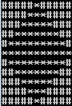

1.Se citeste un numar natural n cu cel mult 2 cifre. Afisati pe ecran un romb cu latura n, format din caracterul *, incadrat intr-un patrat de latura 2n-1 format cu caracterul #, ca in exemplul alaturat pentru n=6.
 2.Sa se realizeze un program C++ care citeste masurile a doua unghiuri exprimate in grade si minute.
Programul afiseaza media celor doua unghiuri, exprimata ca unghi, adica in grade, minute si secunde.
Exemplul 1: 57 20
55 50
se va afisa : 56 35 0
Exemplul 2: 57 21
55 50
se va afisa : 56 35 30
3.Pentru un numar natural n citit de la tastatura sa se afiseze n*n numere astfel:
1 2 3 ... n
2 3 4 ... n+1
3 4 5 ... n+2
......
n n+1 n+2 ... 2n-1
4.Se citesc n numere naturale. Sa se afiseze cel care are suma divizorilor maxima.
5.Se citesc 3 numere naturale z l a, reprezentand o data calendaristica in format zi luna an. Sa se afiseze data zilei anterioare.
Exemple:
4 5 2000 => 3 5 2000
1 2 2000 => 31 1 2000
1 3 1999 => 28 2 1999
6.Se citeste un numar natural n. Sa se descompuna ca produs de doua numere naturale consecutive. Daca acest lucru nu este posibil, atunci sa se afiseze mesajul "IMPOSIBIL".
Exemple:
30 = 5*6
20 = 4*5
10 nu se poate descompune astfel.
7.Se citesc numere naturale pana cand se introduce valoarea 0. Calculati si afisati media aritmetica a numerelor cu exact 2 cifre dintre cele citite.
Exemplu:
Se citesc numerele 3 4 12 2 13 444 0
Media va fi 12.5
8.Se citesc 3 numere naturale n, a si b. Afisati primele n puteri ale lui 2 din intervalul [a,b]. Daca nu exista cel putin n puteri ale lui 2 in interval, atunci se vor afisa cele care exista.
Exemple: pentru n=2 a=6 b=35 se vor afisa valorile 8 si 16
pentru n=2 a=24 b=55 se va afisa valoarea 32.
9.Folosind operatorul conditional, calculati de cate sticle de cate x litri fiecare este nevoie pentru a umple un vas de y litri.
Exemplu:
daca x=4 si y=20 , atunci e nevoie de 5 sticle
daca x=4 si y=23 , atunci e nevoie de 6 sticle
Se citesc doua numere naturale a si l. a reprezinta un an iar l numarul unei luni din anul a. Afisati cate zile are luna l. Se va tine cont daca anul a este bisect.
Exemplu:
a=2008
l=2
rezultatul este 29 deoarece luna febrauarie are 29 de zile in anii bisecti.